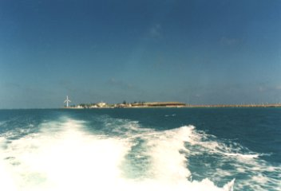
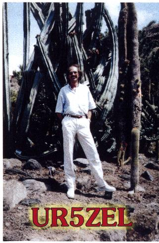
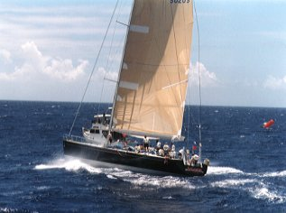

Spratly Is.
このリポートは 1エリアの入感状況です
全国版50MHz DX Clusterも参考にして下さい
TIME:UTC(JST-9:00)
 第29回VSG・第17回VCG全国大会
第29回VSG・第17回VCG全国大会

第29回VSG・第17回VCG全国大会
【Back Issues Aug.99】
31.Aug.99
(13:00-g) BY-TV 00:00- 49.750 -- VK-TV 01:00- 46.172/240 -- VK4KJL 02:19 50.110/142 SSB VK4NW 02:35 50.110/130 SSB VK4RGG 02:42- 50.058 CW Beacon VK6RSX 02:45- 50.304 CW Beacon VK2HO 02:47 50.110 SSB VK4TVI 02:57 50.110 SSB VK4BRG 03:13- 50.077 CW Beacon VK4GPS 03:15 50.110 CW VK6RPH 03:16- 50.066 CW Beacon (OF88) VK4LR 03:32 50.110/130 SSB VK8RAS 04:10- 50.047 CW Beacon *VK6RSX 04:30- 50.304 CW Beacon Strong 3D2TC 09:00 50.110/115 SSB V73SIX 09:44- 50.014 CW Beacon VK4KK 10:00 50.110 CW VK8VF 11:00- 50.057 CW Beacon VK4RIK 11:00- 52.445 CW Beacon ◎ 昼前からVK'sが強力に入感。 珍しくVK6RPH(50.066MHz)が他のビーコンと同時に聞こえていた。 昨日リポートしたJY9NX・田原さんは、10:00z頃に50.036MHzの沖縄のビーコン(JR6YAG)と思われる信 号を受信している。 アンテナ方向は75度方向だったと。
|
30.Aug.99
(14:00-f) BY-TV 00:00- 49.750 -- VK-TV 02:30- 46.172/240 -- VK4BLK 03:13 50.110 CW/SSB VK6RSX 03:30 50.304 CW Beacon VK4JH 03:38 50.110 CW/SSB VK4BRG 03:40- 50.077 CW Beacon VK8RAS 03:45 50.047 CW Beacon V73SIX 07:55 50.014 CW Beacon 3D2TC 08:33 50.110 CW V73AT 09:07/32 50.110 CW P29KFS 10:14 50.110/135 SSB QSO with V73AT VK4ABW 10:26 50.110 SSB VK4DUG 10:29 50.110/130 SSB ◎ JM1CAX・田原光児さんは昨年10月にヨルダンの日本大使館勤務となり、現在JY9NXのコールサイン でQRVしている。 先日、一時帰国した際、50MHzの4ELとIC-756を購入、8月27日から6mに出ている。 初日にYO、JY、4Xなど3エンティテイーとQSOしたとの事だが、クラスターにもCT、SV、IKなどヨーロ ッパからリポートが上がっている。 JYは、JAから6mで未交信だが、前のサイクルで"近隣"の4X4、5B4、 9K2などともQSO出来ているので、今サイクルでオープンする可能性は高い。 ◎ 昨日、北・東日本を中心にオープンしたスリランカの4S7YSG・佐竹さんからのリポートによると、 この日のオープンは約30分程度で、QSO出来たエリアと局数はJA1=2、JA2=1、JA7=3、JA9=1の7局。 4S7YSGで初めての"箱根越え"のQSOだったとのことだが、信号はQSBが深くQSOは楽ではなかったと。29.Aug.99
(15:00-a) VK4APG 04:50 50.200 SSB VK4ABW 09:24 50.110 CW HL1LTC 09:24 50.110 CW DS5KYG 09:48 50.204 SSB ◎ 午後から北日本にはZL's、東日本から西日本にかけてVK'sが強力に入感。 VSG/VCGの帰路、北陸 道、上信越道走行のモービルにもVK/HLは強力。 08:00過ぎから北、東日本に入感した4S7YSGはさす がにモービルでは聞こえない。28.Aug.99
(14:00-b) BY-TV 00:00- 49.750 -- ZL-TV 00:00-- 45.240/260 -- weak VK-TV 00:00- 46.172 -- weak ◎ 朝から49.750MHzのバズが50MHz帯まで広がっている。 ZL/VKのTVも弱いながら入感。 ◎ 8月28日(土)、29日(日)はVSG/VCG全国大会(金沢市)参加のため、日中のリポートはお休み。 [JA9 金沢市からのリポート] VSG/VCGの前夜祭は予定通り18:30から実行委員長のJH9CYY小塩さんの司会で開会。 JA9SSB市村さ んの乾杯の音頭の後、参加各局の自己紹介がおこなわれた。 今回の出席者は54局。 29日のミーティングは、09:00から開会される。27.Aug.99
(13:00-e) BY-TV 00:00- 49.750 -- ZL-TV 00:25-- 45.240/260 -- weak 9M-TV 06:00- 48.240/260 -- VK6RSX 06:40- 50.304 CW Beacon VK4JH 09:07 50.110 CW VK4ABW 09:52 50.110/130 SSB *JR6YAG 12:00- 50.036 CW Okinawa Beacon ◎ 午前中に弱いZL-TVが確認されたものの、その後は46MHz帯のVK2/4のTVも上昇してこなかった。 06:00z頃になって南西方向からの9M-TVの上昇と共にVK6RSXが強力に入感してきた。 オーストラ リア西部のビーコンの中では比較良く入感するこの局は、インド洋に突き出たNorth West Capeの Exmouth(GL=OG77)のビーコン。 公表されているデータでは50Wにダイポールで運用している。同じ VK6でも西南部のPerthのビーコンはなかなか聞こえないが、オーストラリア中部を横断する南緯22 度から26度付近のライン上にあるVK6RSXは、VK4BRG(GL=GQ48)、VK8RAS(GL=PG66)などと共に、磁 気赤道を挟んで、日本とは伝搬的に最適な距離（特にアフタヌーンタイプの伝搬）となっている。 ◎ 第29回VSG/第17回VCG全国大会が8月28日(土)、29日(日)の両日、石川県金沢市の「テルメ金沢」 で開催される。 28日は午後6時30分から前夜祭、29日は午前9時からミーティングが予定されている。 既に宿泊の参加は締め切られているが、29日のミーティング参加は自由(会費は3.000円)。受付開始 は8時30分より。 会場：石川県金沢市松島町 17 (西インター傍)「テルメ金沢」 TEL 076-269-231126.Aug.99
(13:00-d) BY-TV 00:00- 49.750 -- VK-TV 00:00- 46.172 -- weak ZL-TV 03:00-- 45.24/25/26 - weak VK4BLK 06:55 50.110 CW/SSB VK6RSX 07:00 50.304 CW Beacon VK4GPS 07:04 50.110/106 CW/SSB *VK4BLK 09:20 50.110/130 SSB VK4JH 09:32 50.110 CW VK8RAS 09:44- 50.047 CW Beacon VK4BRG 09:45- 50.077 CW Beacon VK4ABW 12:15 50.110 SSB VK8VF 12:17 50.057 CW Beacon *VK4JH 13:00 50.110 CW/SSB ◎ 昨日同様、夕方近くなってVK4'sが入感してきた。 VK'sは既に秋のコンデションに移っている。25.Aug.99
(14:00-f) BY-TV 00:00- 49.750 -- VK-TV 00:00- 46.172/240 -- *JR6YAG 01:00- 50.036 CW Okinawa Beacon ZL-TV 02:45- 45.250 -- weak VK4WTN 03:55 50.110 SSB VK4BRG 04:05 50.077 CW Beacon VK8RAS 04:08- 50.047 CW Beacon *VK4WTN 07:20 50.110/130 SSB VK6RSX 07:20- 50.304 CW Beacon VK4BLK 07:23 50.110/130 SSB VK6KZ/4 07:30 50.110 SSB 9M-TV 09:00- 48.240/260 -- BV2SR 09:39 50.110/120 SSB BV2NT 09:58 50.110 SSB *VK4BLK 10:00 50.120 SSB/CW Evening TEP VK4JH 10:06 50.110/150 SSB/CW VK8VF 11:40- 50.057 CW Beacon *VK6RSX 11:40- 50.304 CW Beacon VK4RIK 11:40 52.445 CW Beacon VK8KTC 11:53 50.130 SSB BV2DP 12:17 50.110 CW YC1EHR 13:39 50.110 CW YC1DYY 13:43 50.130 SSB YC1NYU 13:53 50.110/100 CW ◎ 午前中からVK方面のTVが上昇、昼過ぎからVK4/VK8が入感。 45MHzのZL-TVも短時間ながら上昇し てきた。 クラスターにZL3NE/1がJA2の受信をリポートしていたが、1エリアではZLの信号は確認出 来なかった。04:30z頃に一旦コンディションは落ちたが、07:00z過ぎに再び上昇、この時間は信号 も強力だった。 VK'sの入感は夜間の"Eveningタイプ"のTEPまで続いた。24.Aug.99
(13:00-d) VK-TV 01:00- 46.172 -- VK-TV 02:00- 46.240 -- ◎ 午前中から強力に46.172MHzのVK-TVが入感していたが、50MHz帯では何も聞こえない。 VK-TVは昼 過ぎまで46.172/240MHzが入れ替わりながら入感していた。 西方向からの49.750MHzのTVは夕方になっ て上昇。23.Aug.99
(12:00-c) BY-TV 00:00- 49.750 -- VK-TV 08:20- 46.172 -- ◎ 夕方になってVKのTVが弱く上昇してきたが、日中は"ノイズ"だけの6mバンド。22.Aug.99
(13:00-c) VK-TV 04:00- 46.172 -- VK6RSX 05:00- 50.304 -- VK-TV 07:15 46.172 -- VK4JH 10:10 50.110 CW ◎ 何時も入感する49.750MHzのTVも今日はほとんど聞こえない。午後からVKのTVが上昇すると同時に、 VK6RSXのビーコンが1時間ほど強力に入感していた。21.Aug.99
(14:00-d) BY-TV 09:00- 49.750 -- (JT2KAA 08:55 50.110 CW JA2.9) JD1BIA 09:15 50.120 SSB ◎ 相変わらずコンデションは落ち込んだまま。 夕方に46MHz帯のTVが上昇して弱いVKが聞こえている が、入感の時間も聞こえる範囲も狭い。 今日のJD1BIAも信号は安定しない。20.Aug.99
(13:00-c) BY-TV 09:00- 49.750 -- VK-TV 09:00- 46.172 -- ◎ 今日から"ハムフェア'99"が「パシフィコ横浜」で始まった。 東京の晴海、有明と続いてきた 開催場所も今年から神奈川県に移った。距離的にはさほど離れてはいないが"気分的"には遠く感じて しまう。ハムフェアの期間中の日中のDXリポートは"お休み"。19.Aug.99
(13:00-e) BY-TV 01:00- 49.750 -- VK-TV 06:00- 46.172/240 -- VK4DUG 06:17 50.110 SSB ◎ 午前中は49MHz帯のTVもほとんど上昇してこない。 06:00頃から46MHz帯のVK-TVが上昇、直後に 短時間VK4が入感した。 ◎ 8月17日までSouth Cook Isから運用していたCX3AN、CX4CRの両局は、現在North Cook Isからそ れぞれZK1AAN、ZK1CRRのコールサインでQRVしている。 今日の昼過ぎに28MHzで強力に入感していた が、このコンデションでは6mの伝搬は無理？。18.Aug.99
(13:00-d) BY-TV 00:00- 49.750 -- ◎ 午前中に聞こえていた49MHz帯のTVも午後にはほとんど感じられないほど。 国内、外のDXの入感も 無く、今日も静かな6m。 太陽黒点数(SSN値)も8月12日に辛うじて100に上昇したものの、8月10日から 17日まで連続二桁に落ち込んでいる。 次のコンデションの上昇は8月最終週？。17.Aug.99
(13:00-c) BY-TV 00:00- 49.750 -- VK-TV 03:00- 46.172 -- weak 9M-TV 03:00- 46.240/260 -- *JR6YAG 03:00- 50.037 CW Okinawa beacon ◎ 午後になって上昇した48MHz帯の9MのTVも、短時間でフェードアウト。 昨日は早い時間からイン ドネシア(YC/YF)の入感で賑わったが、今日はDXのオープンもなく6mは静か。16.Aug.99
(14:00-e) BY-TV 00:00- 49.750 -- JA1BRK/DU1 03:06 50.110 CW DX1RVN 03:10 50.110 SSB OP.JI1DLZ QSL:JA1HGY 9M-TV 04:30- 48.240/260 -- *JR6YAG 05:00- 50.037 CW Okinawa Beacon HL2IGU 06:19 50.120 CW YF1OO 09:02 50.110 SSB DS5JQK 11:44 50.150 SSB HL5BAS 11:52 50.190 SSB HL3QZH 12:06 50.180 SSB VR2XMT 12:35 50.110 SSB ◎ 午前中はJA8方面の国内Esが強力。 何の前触れもなく突然入感してきた"DU"の信号は強力だった。 しかし、コンデションは長続きせず十数分でフェードアウト。 JA'sによるDUからの運用は本日まで。 夕方からのインドネシア、韓国は強力。 ◎ FO(French Polynesia、Maruquesas & Austral Is)から運用していたFO0CLA(F2HE)のDX Pedi も、結局6mではオープンのニュースもなく8月13日に終了した。 夏場のコンデションではJAからの可 能性が無いのは判っていても、太平洋地域となると何となく聞こえるのではないかと期待してしまう。 太平洋地域では現在CXのグループが6mがらみのDX Pediを行っているが、"出た"というニュースはま だ聞かない。 最近はHFから50MHz以上まで"出られる"オールバンドのRIGが多いので、DX Pediの運用 周波数に"6m Band"も予定として加えてしまうのかも知れないが、"出る"と"出られる" では大きな違 い。やはり本格的に6mに"出る"局は少ない。15.Aug.99
(14:00-c) BY-TV 00:00- 49.750 -- VK-TV 01:20- 46.172 -- ◎ 関東地方に災害をもたらした熱帯低気圧による豪雨も治まったが、この豪雨に洗い流された様に、 今日の6mのコンデションは夕方まで静か。 JA8からクラスターにリポートされいたKH6HME(06:08z)の ビーコンは、1エリアには聞こえない。14.Aug.99
(13:00-e) BY-TV 00:00- 49.750 -- VK-TV 00:30- 46.172 -- T88JA 00:40- 50.110 CW JF8HIQ/JD1 07:25 50.195 SSB Minami torishima V73SIX 08:45 50.014 CW Beacon V73AT 09:05 50.110 CW ◎ 関東地方は熱帯低気圧の影響で昨夜から雷鳴混じりの豪雨が続いている。 午前中に"雨ノイズ"の中からT88JAのCWが聞こえていたが信号は弱く呼んでいる局は疎ら。 ここのと ころ昼近くまで46MHz帯のVK-TVが入感しているが、50MHz帯がオープンするコンデションまでは上昇 しない。13.Aug.99
(14:00-c) BY-TV 00:00- 49.750 -- VK-TV 00:30- 46.172 -- T88JA 07:10- 50.110 CW ◎ 今日のDXは07:00z頃のT88JAの入感で始まった。 オープン後、数分で信号はS-9まで上昇、1時間 ほど強力に入感した。 午後は西方向のバズも無く静か。12.Aug.99
(14:00-f) BY-TV 00:00- 49.750 -- VK-TV 06:00- 46.172 -- V73SIX 07:00- 50.014 CW Beacon V63AO 07:08 50.120 SSB V73AT 07:43 50.110 SSB ◎ 昨日と同じパターンで午後から太平洋方面のオープンで始まった。 V73/V63→VK8/P29→YB/9M2と、 時間と共に西に移るコンデション。 YC/YBは強力に入感するが13:00−14:00z頃がピーク。 今夜が極大日となるペルセウス座流星群によるM/Sが、夜半から明日の早朝にかけて楽しめる。 ◎ 先週まで200を超えていたSSN(太陽黒点数)も遂に8/10=89、8/11=76と、二桁に落ち込んでしまった。 サイクル23の平均値はこれでまた上昇カーブの勢いが萎えてしまった。 それにしても昨日の76は落ち 込み過ぎ。 "皆既日食"で太陽が良く見えなかった!!...??。11.Aug.99
(15:00-h) BY-TV 00:00- 49.750 -- VK-TV 05:00- 46.172 -- weak V63AO 06:51 50.120 SSB V73SIX 06:58 50.014 CW Beacon V73JK 07:30 50.110/132 SSB T88JA 07:49 50.110 CW VK-TV 09:20- 46.172 -- VK8MS 12:16 50.110 SSB YC1MH 12:47 50.130 SSB 9M-TV 13:00- 48.240/260 -- YC1EHR 13:35 50.130 SSB YF1OO 13:35 50.130 SSB 9M2NK 13:53 50.107 CW 9M2/JI1ETU 13:54 50.085 CW *YF1OO 14:17 50.100 CW ◎ 朝から西方向のバズも無く静かな6mと思われたが、06:50zに突然V63AO・西村さんのCQが飛び込ん できた。 JA7のビーコンを聞きつけてQRVしてきたとの事だが、信号は強力だった。 この後、V73JK、 T88JAが強力にオープン、夜はVK8、YC/YF1が上昇。 9M2'sは1エリアでは弱い。10.Aug.99
(15:00-e) BY-TV 00:00- 49.750 -- VK-TV 00:00- 46.240 -- HL2IGU 02:50 50.150 CW 9M-TV 07:00- 48.240/260 -- 3D2TC 08:55 50.110 SSB weak HL5XF 08:56 50.130 SSB VK-TV 09:20 46.172 -- P29PL 09:56 50.110 CW V73SIX 10:00 50.014 CW Beacon DS5ISO 13:00 50.130 SSB *HL5XF 13:08 50.125 SSB ◎ 日中は国内Esも無く、6mは静か。夕方から西方向のバズとVKのTVが上昇。 ◎ ZL9CIとの初QSOで話題となったCampbell Is.は、未交信のエンティティーとして長い間JAとは相 性は良くなかった。 W3EPがリポートしている最新の「50MHz USA Firsts!」(米国からの50MHz初QSO) のリストによると、米本土からのCampbell Is.とのQSOは、1982年4月20日のZL4OY/A→WB7OHFが初QSO と記録されている。 当時の「ZL」は51MHz帯の運用だったが、伝搬的にはJAが有利のはずのCampbell が米本土と早々とQSOしていたのは意外だった。ちなみに北米からのQSOエンティティー数は現在189。 当時はサイクル21の"下り坂"とは言え、JAからもコンデション的には悪くなかった。この翌年の1983 年4月にZL4OY/CとしてChatham Is.からQRVした際にはJAからも多数QSOしている。09.Aug.99
(14:00-d) BY-TV 00:00- 49.750 -- *JR6YAG 06:00- 50.037 CW Beacon(Okinawa) YC1MH 13:15 50.110/130 SSB VK8VF 13:20 50.057 CW Beacon VK8MS 13:22 50.110 SSB YF1OO 13:27 50.150 SSB ◎ 7月29日から200を超えていたSolar fluxも一週間後の8月5日には177と大台を割った。昨日(8日) は137.8まで一気に落ち込んいる。世界的にみてもEU→AFなど南北のパスはまリポートされているも ののEU→NA、SAなどの"横パス"のQSOはすっかり減ってしまった。
|
 UR5ZEL (UKRAINE)
6月20日15:32zに50.108MHz [TNX JF6EZY] |
08.Aug.99
(14:00-d) BY-TV 00:00- 49.750 -- JT1CJ 02:50 50.110 SSB *JT1CJ 04:30 50.110 SSB VK-TV 05:00- 46.172 -- ◎ 昨日のJT1KAAに引き続き、今日はJT1CJ(Gan)が入感している。 信号も強力で全エリアにオープン。07.Aug.99
(13:00-c) BY-TV 00:00 49.750 -- VK-TV 09:00- 46.172 -- weak JT1KAA 09:26 50.110 SSB/CW ◎ 午前中に弱く入感していた49.750MHzのTVも、午後にはほとんど聞こえなくなった。夕方までは 6mのDX伝搬は完全に"死んで"いたが、09:00z過ぎにJT1KAAが短時間ながら強力に入感した。06.Aug.99
(13:00-e) BY-TV 00:00- 49.750 -- *P5-BC 00:00- 48.250 AM V73SIX 04:40- 50.014 CW Beacon VK-TV 06:00- 46.172/240 -- *JR6YAG 06:00- 50.037 CW Beacon(Okinawa) ZL-TV 06:40 45.250 -- weak VK4KK 07:00 50.110 SSB/CW VK4JH 09:11 50.110 CW VK4ABW 09:17 50.110 SSB ◎ 午後から太平洋方面の弱いオープニングが見られたが入感時間は短い。 2エリアからハワイのKH6HMEのビーコンの入感(03:45z)がリポートされていたが、1エリアでは確認出 来なかった。05.Aug.99
(12:00-f) BY-TV 00:00 49.750 -- VK-TV 05:30- 46.240 -- weak V73SIX 05:35 50.014 CW Beacon V73JK 05:37 50.110 CW *P5-BC 06:00- 48.250 AM 9.650×5 *JR6YAG 06:50- 50.037 CW Beacon(Okinawa) BV2NT 07:19 50.110/120 CW/SSB 9M-TV 07:30- 48.240/260 -- BV4QI 09:40 50.110 SSB V63AO 09:43 50.120 SSB SC Beam 120 dg P29KFS 09:48 50.120 SSB Beam 150 dg P29PL 09:54 50.110 SSB VK4JH 09:54 50.110 SSB *V73JK 09:55 50.110 SSB VK8VF 12:10- 50.057 CW Beacon ◎ 西方向から49.750MHzのTVのバズが強力。このTVと同時に48.250MHzでピョンヤン(北朝鮮)の日本語 放送の高調波(9.650MHz×5)が聞こえる。太平洋方面も徐々に聞こえてくる様になった。 夕方から48MHz帯の9MのTVが上昇。

04.Aug.99
(14:00-d) BY-TV 00:00- 49.750 -- VK-TV 04:40 46.172 -- weak ◎ 日中は49.750MHzのTVだけで50MHz帯は静か。 昼過ぎに弱いVKのTVが上昇したが直ぐに落ちてしま った。 ◎ ここのところ夜間にVK4/8、YC/YB方面が良く入感している。8月中のVKのオープンは太陽活動の最 盛期には珍しいことではないが、一昨日のZLの入感には驚かされた。8月のZLとのQSOは初めてと思わ れる。 立ち上がりから低迷していたサイクル23も、5月に入ってからSF(Solar flux)もSSN(Sunspot Number) も急上昇している。 UN3/UR5が入感した6月下旬(6月24日から31日)には、今サイクルでは初めてSFは 200を超えた。 7月中旬に一度落ち込んだが、7月29日から再びSFは200を超えている(7/31=200.6、 8/1=216.3、8/2=212.5)。この傾向はこれからも続くと思われるので、9月以降の今秋のDXシーズンは 大いに期待出来そうだ。03.Aug.99
(14:00-g) BY-TV 00:00- 49.750 -- HL2IGU 03:38 50.120 CW VK-TV 06:15- 46.172/240 -- ZL-TV 06:15 45.240/260 -- DS1GQS 07:41 50.120 SSB VK4JH 09:27 50.110 CW 3D2TC 09:30 50.110 SSB VK4BRG 09:55- 50.077 CW Beacon VK8VF 11:20 50.057 CW Beacon VK4ABW 13:23 50.110 SSB *VK4JH 13:26 50.110 CW ◎ 早朝から終日、西方向のTVのバズが強力。 昼頃からJA8とHLが強力に入感。 昨日より早い06:00z 過ぎからVK/ZLのTVが上昇してきたが、ZL-TVは間もなくフェードアウト。 08:30z頃にJA8で4S7EAを 呼んでいる局がいたが、今日は強力なEs層で更にワンホップしてJA8まで飛んでいった？。 今日も50.110MHzに"居座る"VK4が"ウルサイ"。 相手をするJA局が居るので仕方無いのだが、JA局側 もコールしたら(されたら)他の周波数に"誘導"するよう心がけたいもの。02.Aug.99
(15:00-i) BY-TV 00:00- 49.750 -- KH6HME 01:24 50.061 CW Beacon (KH6SX 01:34 50.110 CW JH7LLE) VK-TV 02:30- 46.172 -- 9M-TV 03:30- 48.240/260 -- (4S7TN 07:20 50.110 SSB JA2's) 4S7EA 07:38 50.110 SSB ZL-TV 08:30- 45.24/25/26 -- VK4JH 08:30 50.110 CW VK4GPS 08:37 50.110 CW VK4RGG 08:39 50.058 CW Beacon VK4BRG 08:39 50.077 CW Beacon 3D2TC 08:52 50.110 CW ZL3NW 08:57 50.110/160 SSB VK4ABW 08:58 50.110/105 SSB ZL3TIC 09:00 50.110/120 SSB *3D2TC 09:23- 50.110 SSB VK6RSX 10:00 50.304 CW Beacon *JR6YAG 11:25- 50.037 CW Beacon YC1EHR 14:13 50.110 CW ◎ 午前中はJA8のEsが強力。 01:00z頃にハワイのKH6HMEのビーコン入感がJA7エリアからリポートさ れたが、1エリアで確認出来たのは01:20z頃から20分程。 01:34zにJH7LLEがQSOしていたKH6SXは、1エ リアでは残念ながら聞こえなかった。 夕方に入感した4S7'sはJA2、3でQSOしていたが、1エリアでは 信号が確認出来る程度。 08:00zを過ぎる頃から45MHz帯のZL-TVが上昇。 50.110MHzでQSOしているVK4 の陰から3D2TC、ZL3'sのCQが入感してきた。 ◎ 昨夜は久しぶりに東南アジア方面の信号が強力に入感していた。 VK8からインドネシア(YB/YC/YF)、 西マレーシア(9M2)までの広範囲のオープン。


01.Aug.99
(15:00-h) BY-TV 00:00- 49.750 -- 9M-TV 00:30- 48.260 -- *JR6YAG 00:45- 50.037 CW Beacon VK-TV 07:20- 46.240 -- VK4JH 07:25 50.110/115 SSB/CW VR2DXA 08:15 50.120 SSB P29PL 11:35 50.110 SSB 9M-TV 12:00 48.240/260 -- VK8VF 12:00- 50.057 CW Beacon VK8MS 12:05 50.110/120 SSB VK6RSX 13:05- 50.304 CW Beacon YB0CBI 13:27 50.115 SSB 9M2/JI1ETU 13:35 50.085 CW YC1EHR 14:02 50.110 CW YC1DYY 14:21 50.101 CW YF1OO 14:23 50.130 CW ◎ 午前中はEsによる西方向から強力なTVのバズと弱い国内DXが入感。 午後には49MHz帯のTVも聞こえ なくなった。 夕方になって久しぶりにVK4JHが強力に入感してきた。 夜間はVK8とYB/YCが強力。
| Index | Back Issues |
|---|---|
 |
最新情報へ戻る |